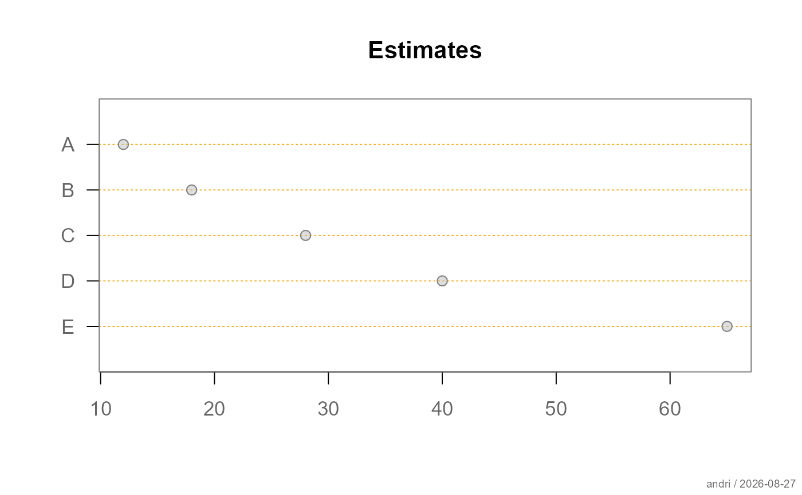
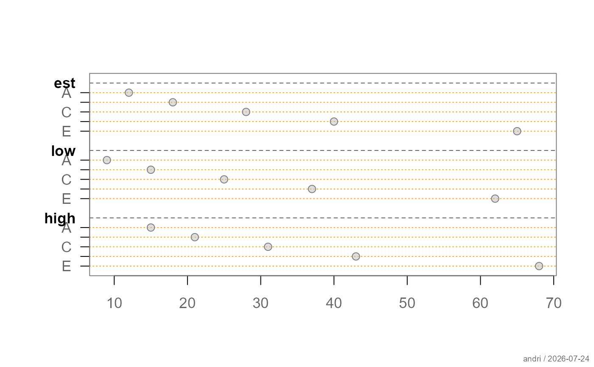
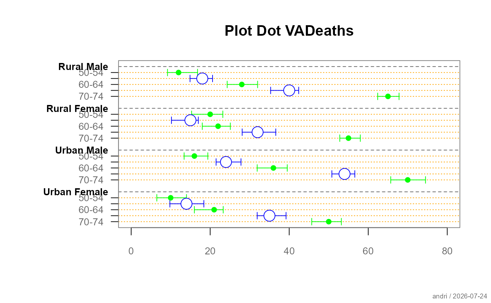
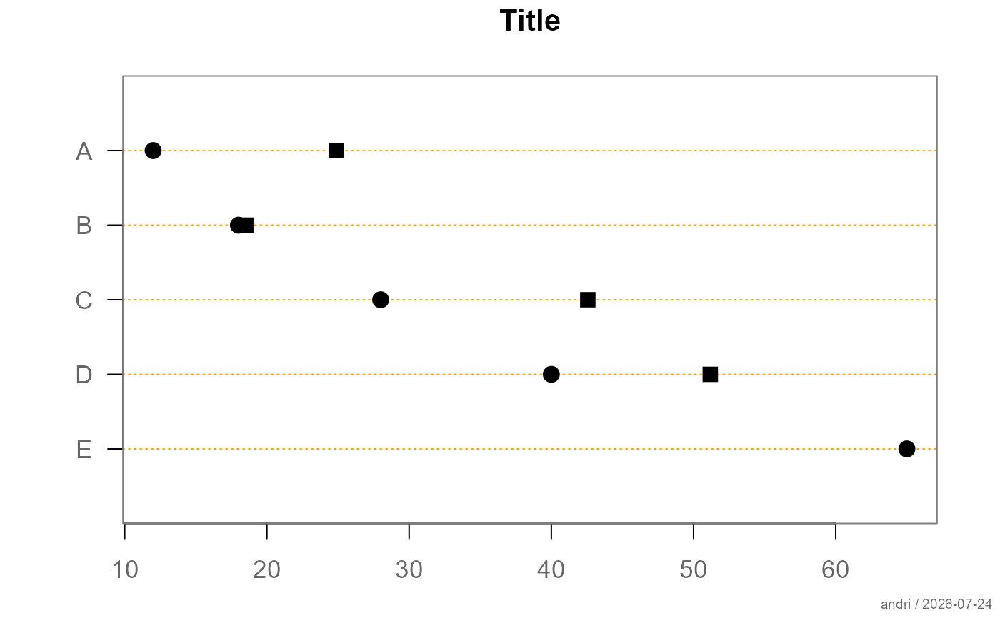

Displays numeric estimates as points on a horizontal scale. Optional confidence limits are shown as horizontal lines with capped endpoints. Several series of estimates can be arranged in labelled groups.
Usage
plotDot(
x,
items = NULL,
groups = NULL,
main = NULL,
xlim = NULL,
gap = 1,
axes = TRUE,
xax = NULL,
box = .useTheme,
grid = .useTheme,
pch = .useTheme,
...
)Arguments
- x
numeric estimates or confidence interval data. Supported formats are a numeric vector, a numeric matrix, a three-dimensional numeric array, or a
"CI"object created withas.CI- items
optional character vector containing the item labels; defaults to the row names or first dimension names of
x- groups
optional character vector containing the group labels; defaults to the column names or third dimension names of
x- main
optional main title
- xlim
numeric vector containing the limits of the horizontal axis; by default, the range of all estimates and confidence limits
- gap
non-negative numeric value controlling the vertical space between groups
- axes
logical; whether the horizontal and item axes are drawn
- xax
optional specification for the horizontal axis, interpreted by the internal axis renderer
- box
specification controlling the plot box. The default
.useThemeuses the active theme. A logical value,NA, or a named list of graphical parameters can also be supplied- grid
specification controlling the horizontal item and group grid lines. The default
.useThemefollows the active theme. A logical value,NA, or a named list of graphical parameters can also be supplied- pch
specification for the estimate points. The default
.useThemeuses the point settings of the active theme. A plotting symbol or a named list containing parameters such aspch,col,bg, andcexcan also be supplied- ...
additional graphical parameters passed to
par
Value
invisibly, a list containing:
yposvertical positions of the items within each group
group_yvertical positions of the group labels
sep_yvertical positions of the group separators
Details
A numeric vector represents one estimate for each item.
A numeric matrix represents estimates only: rows define the items and columns define the groups. Consequently, a matrix with three columns is interpreted as three groups and not automatically as estimates with lower and upper confidence limits.
Use as.CI to declare explicitly that a matrix, data frame,
list, or result from tapply contains confidence interval
data:
A "CI" object contains the columns est, lci, and
uci. Additional columns can define the item and group structure.
If two additional columns are present, the first defines the items and the
second defines the groups.
Confidence interval data can alternatively be supplied as a
three-dimensional numeric array with dimensions
items × 3 × groups. The second dimension must contain, in this
order, the estimate, lower confidence limit, and upper confidence limit.
Values supplied directly as arguments take precedence over the corresponding settings of the active theme.
See also
Other plot.univariate:
plotArea(),
plotBar(),
plotBox(),
plotCatDist(),
plotDens(),
plotDensBox(),
plotECDF(),
plotFdist(),
plotLines(),
plotQQ(),
plotViolin()
Examples
# estimates for a single series
est <- c(A = 12, B = 18, C = 28, D = 40, E = 65)
plotDot(
est,
main = "Estimates"
)

# matrix columns represent groups of estimates
groupedEst <- cbind(
Control = c(A = 12, B = 18, C = 28),
Treatment = c(A = 16, B = 24, C = 35)
)
plotDot(
groupedEst,
main = "Grouped estimates"
)

# confidence intervals stored in a matrix
ci <- cbind(
est = est,
lci = est - c(2, 3, 4, 5, 6),
uci = est + c(2, 3, 4, 5, 6)
)
plotDot(
as.CI(ci),
main = "Estimates with confidence intervals"
)

# grouped confidence intervals stored in a data frame
groupedCI <- data.frame(
item = rep(c("A", "B", "C"), 2),
group = rep(c("Control", "Treatment"), each = 3),
estimate = c(12, 18, 28, 16, 24, 35),
lower = c(10, 15, 24, 13, 20, 30),
upper = c(14, 21, 32, 19, 28, 40)
)
plotDot(
as.CI(
groupedCI,
estimate = "estimate",
lower = "lower",
upper = "upper"
),
main = "Grouped confidence intervals"
)

# returned positions can be used to add graphical elements
pos <- plotDot(est)
points(
est + 3,
y = unlist(pos$ypos),
pch = 4
)